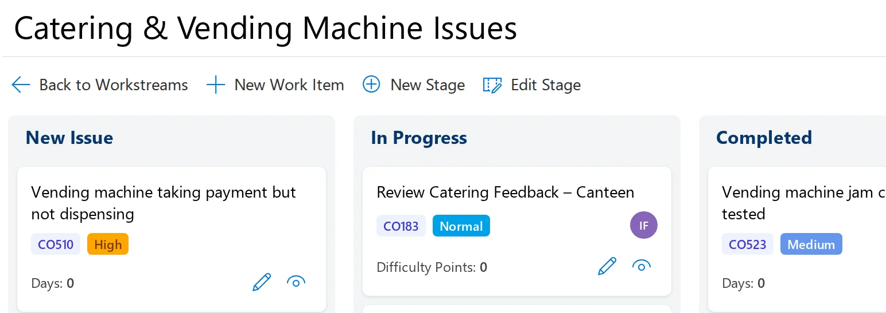
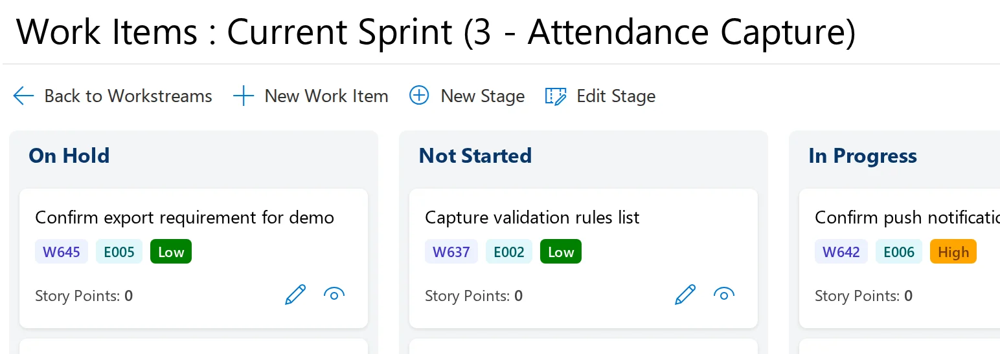
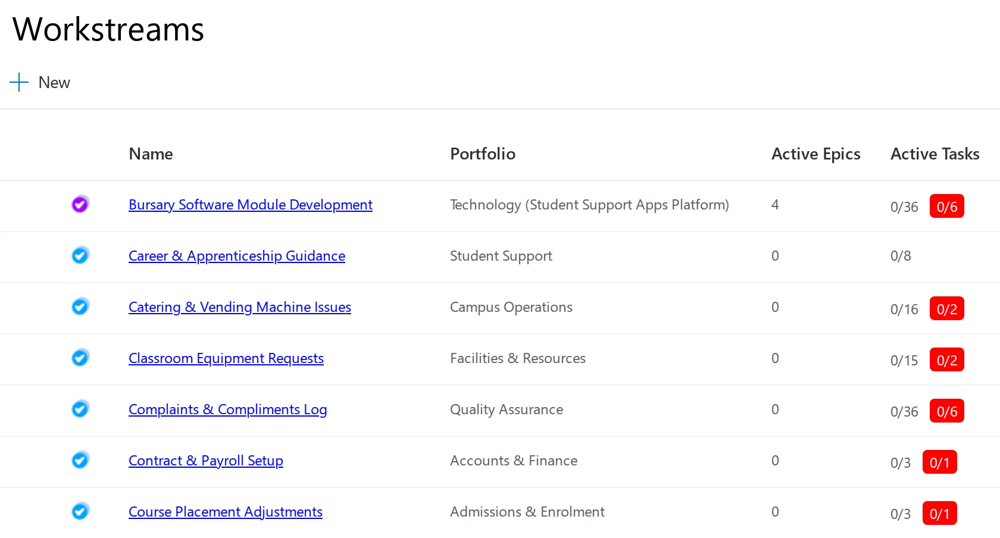
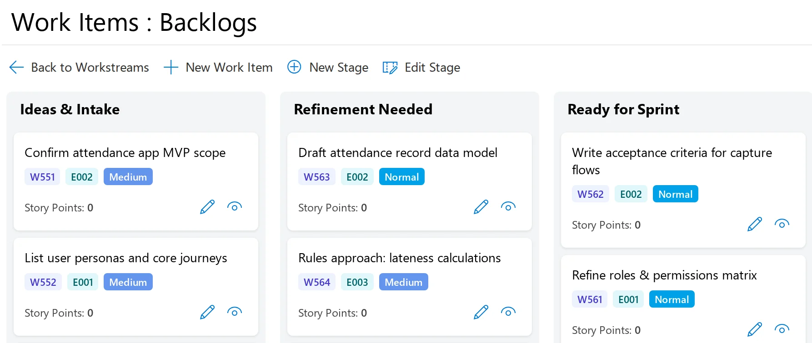

This brochure is a work in progress. The content is not complete and may not be correct.
Group WorkStreams & Agile Sprints
Kanban boards for everyday work. Sprints for delivery teams.
Group WorkStreams gives each stream of incoming work, such as complaints or HR requests, its own board and stages. In Agile Sprints, Scrum teams plan stories in a prioritised backlog and deliver them in sprints and releases.


From a ZedX referral partner. ZedX is made by Swiftpro Corporation Ltd. The screens show the ZedX demo and its sample data.
Group WorkStreams takes everyday work out of spreadsheets
Complaints, catering faults, HR requests and finance queries can each become a workstream, with its own Kanban board, stages and team. Everyone works from one board instead of a spreadsheet.

- Each service has its own boardStages are set for each workstream with New Stage and Edit Stage. In the demo, the complaints log has five and catering issues have three.
- Ownership you can seeEach work item shows a reference, its priority from Low to Critical, difficulty points and who has it once it is assigned.
- Managers see the workloadDashboards show workload, progress and bottlenecks across workstreams, without asking each person for an update.
It suits operational, administrative and service teams whose work arrives every day, outside any project plan or sprint. It can replace the spreadsheets these teams use to track that work. A workstream can also be shown as a simple list or a timeline, and Ask Cloe, the AI assistant built into ZedX, answers questions about the work.
When work needs sprints, a workstream can be linked to Agile Sprints without entering the data twice. Group WorkStreams can also run the daily work behind audit recommendations, and education providers can add ZedX Study Planner, an app for students that connects to Group WorkStreams.
Group WorkStreams and Agile Sprints · page 2
Agile Sprints takes Scrum teams from backlog to release
Epics and user stories wait in a prioritised backlog, move across a board during each sprint and go into planned releases.

- Sprints start with a realistic goalThe team estimates stories in story points and takes on only what its capacity allows.
- Standup reporting is automatedA configurable sprint board shows what is planned, in progress, blocked or finished.
- Velocity is measured every sprintThe team checks velocity against its target and any work carried over, then formally closes the sprint.
Agile Sprints is for teams that deliver software, technology projects and other work in Scrum. A project can hold several Agile boards, one for each team, and everyone sees the scope and the sprint goal before the sprint begins.
Each epic has an owner, a priority and delivery dates, and a Gantt chart shows how epics overlap. Releases can span several sprints, and each story can be assigned to a planned release version.
Group WorkStreams and Agile Sprints · page 3
Which app fits your work?
| Group WorkStreams | Agile Sprints | |
|---|---|---|
| How work arrives | At any time, as requests, cases, issues and routine jobs. | As epics and user stories in a prioritised backlog, planned before each sprint. |
| How it is planned | There is no fixed cycle. Work items move through the workstream’s stages as people handle them. | In timeboxed sprints. The team estimates stories in story points and fills each sprint up to its capacity. |
| How progress is reviewed | On dashboards of workload, progress and bottlenecks across workstreams. | In daily standups and sprint reviews, using completion, velocity and work carried over. |
How the work moves, in three steps
Group WorkStreams
- Give each service a workstream, with its own team and owners.
- Set the stages on the board, then add a work item whenever a request comes in.
- Watch the workload on the Insights dashboard, critical items included.
Agile Sprints
- Fill and rank the backlog with epics and user stories.
- Plan each sprint in story points, up to the team’s capacity.
- Run the sprint board, check velocity against the target, then close the sprint.
Editions, access and hosting
- Editions
- Professional and Group (per user, ideally 1 to 50 users) currently include both apps and Cloe AI, and Home includes Group WorkStreams. Corporate, Enterprise and Enterprise Plus offer every ZedX app. Ask Swiftpro for prices.
- Hosting
- ZedX hosts Home, Professional, Group and Corporate. Enterprise and Enterprise Plus have unlimited users and can run in your own Azure subscription or other agreed infrastructure.
- Signing in
- Staff sign in once with Microsoft Entra ID. Permissions are set by role and follow your organisation’s structure.
- Try it yourself
- Anyone can open the demo at demo.zedx.net without registering. Swiftpro also lists a free trial from November 2026, with no credit card needed.
Ask for a demo at hamzaanjum96.github.io/ZedX. We make the introduction and Swiftpro, the company that makes ZedX, takes it from there.
From a ZedX referral partner, November 2026, work in progress. ZedX, Group WorkStreams, Agile Sprints and the other ZedX names here are products of Swiftpro Corporation Ltd, London.